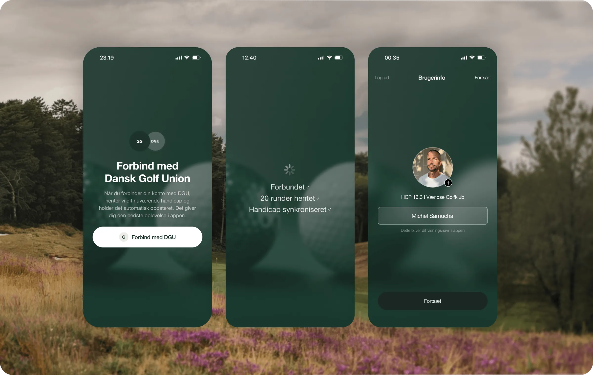
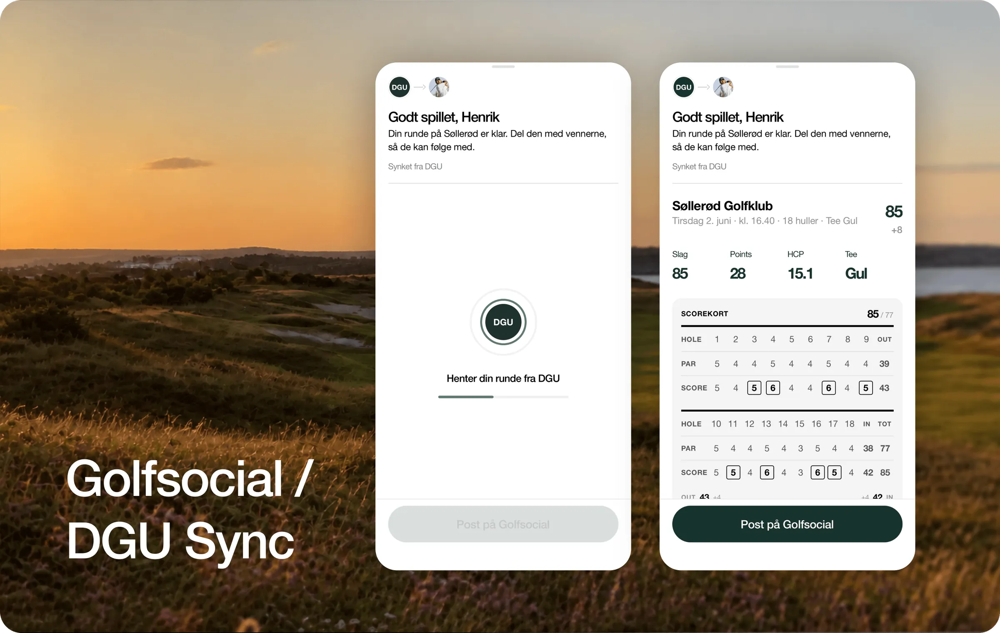

Lad os gætte. Du har registreret dine runder på samme måde i årevis, og du havde ikke just ventet på en app, der skulle fortælle dig hvordan. Fair nok, bliv ved med at gøre det på din måde. Du spiller runden, scoren ryger på det officielle register som den altid har gjort, og i samme øjeblik den gør, henter Golfsocial den stille og roligt direkte fra DGU og gør den til noget der er værd at dele. Birdierne højlydt, trippelbogeyen knap så meget, og lige præcis den slags runder fortjener et publikum.
Din runde, synket fra DGU
Registrér en tællende runde, og du behøver ikke gøre mere. Golfsocial henter den automatisk fra DGU: banen, datoen, scorekortet, det hele, trukket ind og klar til dig. Ingen indtastning to gange, ingen ekstra app at åbne. Runden du lige har spillet, ligger der bare, klar, inden du er tilbage i klubhuset.

Ét tryk fra en score til en historie
Derfra er der ét tryk. Post runden til dine venner. Læg den i din gruppe så dem du spiller med kan følge med. Tilføj billederne fra dagen, skriv en linje om hvordan det gik, og lad runden være det den faktisk var: ikke et tal der bliver arkiveret, men en historie værd at fortælle. Sejren, comebacket, de bagerste ni der faldt fra hinanden og fik alle til at grine. Det er den del vi virkelig bygger til.

Hvad Golfsocial Sync giver dig
- Synket automatisk: din runde kommer fra DGU af sig selv, intet at taste ind.
- Delt med ét tryk: post den til dine venner direkte fra runden.
- Bygget om din gruppe: læg den i en gruppe, så dem du spiller med kan følge med.
- Gør den til din: tilføj billederne og en tekst, så det er dagen du havde, ikke bare scoren.
Gode venner lader ikke gode venner spille i stilhed.
Officielt handicap fra start
Fordi den kommer fra DGU, er runden i Golfsocial den ægte. Samme score som tæller til dit officielle handicap, ikke en genindtastning og ikke en parallel udgave. Din golf får lov at være social uden nogensinde at være mindre end officiel. Den seriøse del forbliver seriøs. Det sjove har endelig fået et hjem ved siden af.
Hvor det fører hen
Golfsocial Sync er ét skridt mod noget større: ét hjem for din golf, hvor runden du spillede og menneskene du spillede den med, endelig er samme sted. Forbind, spil, bliv bedre, og gør det sammen. Det har altid været idéen. Sådan ser det ud, når administrationen forsvinder og kun golfen er tilbage.
Ofte stillede spørgsmål
Skal jeg taste min runde ind i Golfsocial?
Vi vil selvfølgelig allerhelst have, at du taster runden direkte i Golfsocial. Men vælger du at registrere den i Golfbox i stedet, er det helt fint: den synker stadig fra DGU, og dine venner kan følge med, så snart du poster runden på Golfsocial. Uanset hvad slipper du for at taste den samme score ind to gange.
Er den synkede runde min officielle handicap-runde?
Ja. Fordi den kommer direkte fra DGU, er det samme score som tæller til dit handicap, ikke en genindtastning eller en parallel udgave.
Hvordan forbinder jeg Golfsocial med DGU?
Du forbinder din konto med DGU én gang i appen. Derefter holder dine runder og dit handicap sig selv opdateret.
Koster Golfsocial Sync noget?
Nej. Golfsocial er gratis på iPhone og Android.
Bestemmer jeg selv hvad der bliver delt?
Altid. En synket runde ligger der, indtil du selv poster den. Del den med vennerne, læg den i en gruppe, tilføj dine billeder, eller behold den for dig selv.